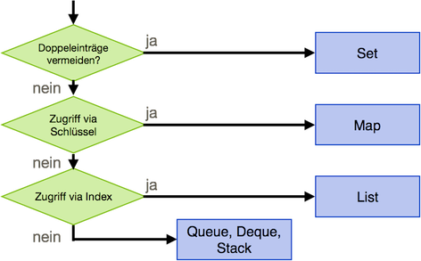
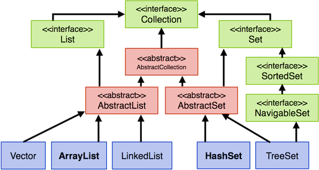
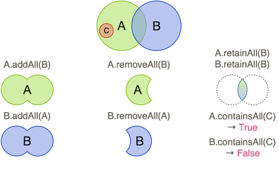

Collections¶
Um mehrere Werte oder Referenzen gleichen Typs zu speichern, haben wir bisher Arrays verwendet. Die Länge von Arrays wird bei der Initialisierung festgelegt und lässt sich dann nicht mehr verändern. Wenn ein weiteres Element einem vollen Array hinzugefügt werden soll, muss zunächst ein neues Array erstellt werden, das länger ist als das alte und dann müssen alle Elemente aus dem alten Array in das neue Array kopiert werden, ehe das neue Element hinzugefügt wird. Das ist recht aufwendig. Darüber hinaus ist es beispielsweise auch aufwendig, in Arrays Doppelungen zu vermeiden. Für ein Element, das in ein Array eingefügt werden soll, muss dafür zunächst geprüft werden, ob es nicht bereits im Array enthalten ist. Diese Nachteile führen dazu, dass wir uns nun mit Datenstrukturen beschäftigen, die ebenfalls mehrere Elemente speichern können, deren Verwaltung aber nicht so aufwendig ist, wie bei Arrays. Diese Datenstrukturen heißen Collections.
Collections haben drei wesentliche Eigenschaften:
- Eine Collection hat keine festgelegte Länge, d.h. es sind beliebig viele Elemente in einer Collection speicherbar.
- In eine Collection können nur Elemente von Referenztypen gespeichert werden, d.h. keine Wertetypen (
int,double,boolean,char, ...). Um auch solche "Werte" speichern zu können, werden wir Wrapper-Klassen kennenlernen. - Im Gegensatz zu Arrays können in einer Collection Elemente verschiedener Referenztypen gespeichert werden. Das ist aber eher ein Problem und kein Feature. Wir werden das vermeiden, da die Verwaltung von Elementen verschiedener Typen fehleranfällig ist. Wir werden Collections typisieren, damit sie nur Elemente eines Typs speichern kann.
Arten von Collections¶
Es gibt unterschiedliche Arten von Collections, welche je nach Einsatzzweck verwendet werden:
| Typ | Struktur | Zugriff | Eigenschaften |
|---|---|---|---|
List |
Menge | wahlfrei (indexbasiert) Iterator |
kann Elemente mehrfach enthalten |
Set |
Menge | Iterator | keine doppelten Elemente keine Ordnung der Elemente |
Map |
Schlüssel-Werte-Paare | schlüsselbasiert | Schlüssel ist eindeutig Werte können mehrfach sein |
Stack |
Stapel/Stack | oberstes Element | last-in-first-out-Prinzip |
Queue |
Warteschlange | erstes und letztes Element | first-in-first-out-Prinzip |
Wir werden uns in diesem Semester aber nur mit den Collections List, Set und Map beschäftigen. Das Prinzip eines Stacks haben wir bereits kennengelernt, als wir uns über den Methodenstack in Programmierung 1 unterhalten hatten. Ein Stack ist ein Stapel, auf den man ein Element legen kann (pop) und von dem man das oberste Element entfernen kann (pop). Mithilfe von top erhält man lesenden Zugriff auf das oberste Element. Auf alle anderen Elemente hat man im Stack keinen Zugriff.
Eine Queue implementiert das Prinzip einer Warteschlange. Ein Element kann an das Ende einer Warteschlange angehängt werden. Herausgenommen werden kann aber immer nur das Element am Anfang (dem head) der Warteschlange.
Eine Liste (List) ist noch am ehesten vergleichbar mit einem Array, außer dass es keine Größenbeschränkung gibt und dass nur Referenztypen in eine Liste gespeichert werden. In Listen werden ebenfalls Indizes verwaltet, so dass man auf die Elemente Zugriff wie in einem Array hat. Es gibt Listen, die automatisch sortiert werden. In Listen können Elemente doppelt vorkommen. Von Doppelungen in Collections wird gesprochen, wenn für zwei Elemente e1 und e2 gilt e1.equals(e2) == true (oder e1.hashCode() == e2.hashCode()).
Eine Menge (Set) hat die besondere Eigenschaft, dass sie keine Doppelungen enthält. Wird versucht, ein Element einer Menge hinzuzufügen, welches bereits in der Menge enthalten ist, dann wird das Element nicht hinzugefügt. Deshalb gibt die add(element)-Methode für eine Menge ein boolean zurück, damit erkannt werden kann, ob das Element hinzugefügt wurde (true) oder nicht (false).
Eine Map kann man sich wie eine Tablle aus zwei Spalten vorstellen. In der linken Spalte stehen Schlüssel key und in der rechten die Werte value. Jedem Schlüssel ist genau ein Wert zugeordnet. Jeder Schlüssel ist eindeutig, d.h. es gibt keine Doppelungen unter den Schlüsseln (die Schlüssel in einer Map sind eine Set). Werte können allerdings doppelt vorkommen (haben aber jeweils einen eigenen Schlüssel).
Eine kurze Entscheidungshilfe, welche Collection verwendet wird, zeigt die folgende Abbildung:

Der Collection-Klassenbaum¶
Leider ist die Verwaltung von Collections in Java nicht einheitlich. Das liegt daran, dass (unverständlicherweise) Listen und Mengen in einer anderen Vererbungshierarchie verwaltet werden, als Maps. Wir schauen uns die Vererbungshierarchie von Collection einaml an. Darin kommen die Listen und Mengen vor, aber nicht Maps.

Die "Mutter-Klasse" der Collections List und Set ist Collection. In der Abbildung fallen unterschiedliche Farben auf. Die grüngefärbten Klassen sind sogenannte Interfaces. Interfaces lernen wir später noch kennen. Ebenso wie die rotgefärbten Klassen, bei denen es sich um abstrakte Klassen handelt. Das soll uns zunächst nicht besonders interessieren, aber wir können uns merken, dass wir die grüngefärbten Klassen als Typen verwenden (insb. den Typ List für die Listen und den Typ Set für die Mengen). Wir können aber keine konkreten List-Objekte bzw. keine konkreten Set-Objekte erzeugen. Das geht nur mit dem blaugefärbten Klassen. Das bedeutet, dass wir z.B. ein konkretes ArrayList-Objekt erzeugen werden oder ein konkretes HashSet-Objekt. Hier einige Beispiele:
import java.util.ArrayList;
import java.util.HashSet;
import java.util.LinkedList;
import java.util.List;
import java.util.Set;
import java.util.TreeSet;
public class Collections {
public static void main(String[] args) {
List l1 = new ArrayList();
List l2 = new LinkedList();
Set s1 = new HashSet();
Set s2 = new TreeSet();
}
}
Beachten Sie, alle Klassen aus dem java.util-Paket zu importieren! Eine Klasse List gibt es z.B. auch im java.awt-Paket! Statt alle Klassen einzeln zu importieren können Sie auch schreiben:
import java.util.*;
Der * ist eine Wildcard und importiert alle Klassen aus java.util.
Zur Diskussion, wann ArrayList besser ist und wann LinkedList, siehe hier. Eine Diskussion über die Unterschiede zwischen HashSet und TreeSet finden Sie z.B. hier. Wir werden für Listen hauptsächlich Objekte von ArrayList erstellen und für Mengen hauptsächlich Objekte von HashSet.
Mengen - Sets¶
Wir betrachten zunächst Mengen genauer und beginnen mit einem Beispiel:
1 2 3 4 5 6 7 8 9 10 11 12 13 14 15 16 17 18 19 20 21 22 23 24 25 26 27 28 | |
In Zeile 1 werden zunächst alle verwendeten Klassen aus dem java.util-Paket geladen. Das sind für unser Beispiel Set, HashSet und Iterator. Die Iterator-Klasse wird verwendet, um durch unsere Menge menge zu laufen. Wir werden auf den Iterator gleich genauer eingehen, lernen aber bald eine einfachere Lösung kennen, um durch unsere Menge zu iterieren.
In Zeile 7 wird die Menge menge erzeugt. Wir deklarieren dafür den Typ Set und erzeugen unter Verwendung des parameterlosen Konstruktors von HashSet ein HashSet-Objekt. Die menge hat also den Compilertyp Set und mindestens den Laufzeittyp HashSet (natürlich noch weitere Laufzeittypen, z.B. Object).
In den Zeilen 14-17 werden der menge Elemente hinzugefügt. Diese Elemente sind hier vom Typ String. Das Hinzufügen von Elementen zu einer Menge erfolgt mit der Methode add(element). Diese Methode gibt ein boolean zurück. Wir lassen in den Zeilen 14-17 diese Rückgabe auf die Konsole ausgeben und stellen fest, dass wir folgende Ausgaben erhalten:
true
true
true
false
Die add()-Methode gibt also 3x ein true zurück und beim vierten Aufruf ein false. Das liegt daran, dass beim vierten Aufruf von add() (Zeile 17) das übergebene Element s4 nicht in die Menge menge eingefügt wird, da sich in dieser Menge bereits ein String mit dem Wert "zweiter" befindet und eine Menge keine Doppelungen enthalten darf. Da s2.equals(s4) den Wert true zurückgibt, erkennt die add()-Methode, dass bereits ein gleiches Objekt in der Menge enthalten ist und s4 wird deshalb nicht eingefügt.
In Zeile 19 lassen wir uns die Anzahl der Elemente in der Menge menge ausgeben. Dies erfolgt mithilfe der size()-Methode (in Collections ist es also nicht length(), auch nicht length und auch nicht getLength() oder getSize(), sondern size()). Der Wert von size() in unserem Beispiel ist 3.
Der Iterator¶
Mithilfe der Klasse Iterator iterieren wir durch eine Collection, d.h. wir laufen durch unsere Collection und betrachten alle Elemente aus der Collection.
Die Klasse Iterator besitzt drei Objektmethoden (eigentlich vier, aber die vierte Methode soll uns zunächst nicht interessieren):
hasNext(): liefert eintruezurück, wenn sich mindestens ein weiteres Element in der Collection befindet; wenn nicht, dannfalse,next(): liefert das nächste Element aus der Iteration zurück (und entfernt es daraus),remove(): löscht das mitnext()zurückgegebene Element.
In Zeile 21 erzeugen wir zunächst mit der iterator()-Methode aus Set ein Objekt von Iterator. Die Referenz auf dieses Objekt nennen wir hier it.
Die while()-Schleife in den Zeilen 22-25 durchläuft nun diese Iteration, indem sie mithilfe von hasNext() prüft, ob sich noch ein weiteres Element in der Iteration befindet und wenn ja, dann wird es mithilfe von next() aus der Iteration entnommen und in Zeile 24 auf die Konsole ausgegeben.
Wir erhalten für unser Beispiel folgende Ausgaben:
zweiter
dritter
erster
Darin sehen wir auch, dass die Reihenfolge des Einfügens in eine Menge nicht gewahrt wird. Wir haben die Elemente in der Reihenfolge "erster", "zweiter", "dritter" in die Menge eingefügt, aber die Ausgabe erfolgt in der Reihenfolge "zweiter", "dritter", "erster". Auf die Reihenfolge haben wir in Mengen keinen Einfluss!
Methoden für Mengen¶
Wir haben bereits drei Methoden für Mengen kennengelernt: add(), size() und iterator(). Tatsächlich sind das Methoden, die in allen Klassen zur Verfügung stehen, die von java.util.Collection erben (erben ist hier eigentlich nicht ganz richtig, da es sich bei java.util.Collection um ein Interface handelt, aber das soll uns hier zunächst egal sein). Wir betrachten nun alle wesentlichen Methoden, die wir für Mengen und Listen zur Verfügung haben (siehe dazu auch die Java-Dokumentation von Collection):
| Methode | Beschreibung |
|---|---|
boolean add(E element) |
Fügt Element element in die Collection ein. Gibt true zurück, wenn Element hinzugefügt wurde sonst false. |
boolean addAll(Collection c) |
Fügt alle Elemente der Collection c in die Collection ein. Gibt true zurück, wenn mindestens ein Element hinzugefügt wurde sonst false. |
void clear() |
Entfernt alle Elemente aus der Collection. |
boolean contains(E element) |
Gibt true zurück, wenn sich element in der Collection befindet, sonst false. |
boolean containsAll(Collection c) |
Gibt true zurück, wenn sich alle Elemente der Collection c in der Collection befinden, sonst false. |
boolean isEmpty() |
Gibt true zurück, wenn sich keine Elemente in der Collection befinden, sonst false. |
Iterator |
Erzeugt einen Iterator, welcher auf das erste Element der Collection zeigt. |
boolean remove(Object o) |
Entfernt o aus der Collection und gibt true zurück, wenn ein Element entfernt wurde, sonst false. |
boolean removeAll(Collection c) |
Entfernt alle Elemente aus c aus der Collection und gibt true zurück, wenn mindestens ein Element entfernt wurde, sonst false. |
int size() |
Gibt die Anzahl der Elemente in der Collection zurück. |
Object[] toArray() |
Gibt die Elemente in der Collection in einem Array-Datentyp zurück. |
Der TyP E in der Tabelle ist ein Platzhalter für einen konkreten Typ. Bei dem Iterator sehen wir eine neue Syntax <E>. Diese lernen wir gleich kennen. E steht, wie gesagt, für einen beliebigen Typ. Die Typisierung wollen wir zunächst motivieren.
Typisieren¶
Generell können in Collections Objekte verschiedener Typen gespeichert werden. Es wäre also möglich, so etwas hier zu tun:
Set menge = new HashSet();
menge.add(new String("erster")); // String einfügen
menge.add(new Power(2,4)); // Power einfügen
menge.add(new Point(2,3)); // Point einfügen
menge.add(new Konto()); // Konto einfügen
Das Speichern von Objekten verschiedenen Typs ist jedoch sehr fehleranfällig und sollte unbedingt vermieden werden! Es gibt auch nicht wirklich sinnvollen Anwendungsbeispiele dafür.
Stattdessen wollen wir angeben, welcher Typ die Objekte haben sollen, die in unserer Collection gespeichert werden können. Dazu typisieren wir die Collection.
Das Typisieren einer Collection erfolgt mithilfe der Diamond-Syntax:
Collection<Typ> name = new KonkreteKlasse<>();
Wir typisieren die Menge menge aus dem eben gezeigten Beispiel:
Set<String> menge = new HashSet<>(); // mit String typisiert - menge nimmt nur Strings auf
menge.add(new String("erster")); // String einfügen
menge.add(new Power(2,4)); // Fehler - kein String
menge.add(new Point(2,3)); // Fehler - kein String
menge.add(new Konto()); // Fehler - kein String
Wir haben menge typisiert und angegeben, dass menge nur Objekte vonm Typ String aufnehmen kann. Dazu geben wir bei der Typdeklaration Set<String> den Elemente-Typ in spitzen Klammern an. Diese spitzen Klammern werden auch in den Konstruktoraufruf eingefügt new HashSet<>();. Darin muss der Typ aber nicht wiederholt werden (der ist ja aus der Deklaration klar).
Der Versuch, Objekte eines anderen Typs als String in die Collection einzufügen, scheitert bereits zur Compilezeit, d.h. das Programm lässt sich gar nicht übersetzen, wenn versucht wird, Objekte anderen Typs als der bei der Typisierung Angegebene einzufügen.
Unser einführendes Beispiel von oben ist deshalb besser mit Typisierung:
1 2 3 4 5 6 7 8 9 10 11 12 13 14 15 16 17 18 19 20 21 22 23 24 25 26 27 28 | |
Beachten Sie, dass auch der Iterator (Zeile 21) typisiert wird.
Die for-each-Schleife¶
Wenn wir unsere Collection typisieren, haben wir auch eine einfachere Möglichkeit, durch diese zu laufen als die Verwednung des Iterators. Wir können stattdessen die for-each-Schleife verwenden. Die allgemeine Syntaxh einer solchen Schleife ist:
for(TypElement element : collection)
{
}
Für unser Beispiel könnten wir den Iterator ersetzen durch diese Schleife:
1 2 3 4 5 6 7 8 9 10 11 12 13 14 15 16 17 18 19 20 21 22 23 24 25 26 27 | |
Übrigens: anstelle der Collection (hier: menge) könnte auch ein Array stehen. Wenn Sie also vollständig durch Array laufen möchten, müssen Sie das nicht zwingend über alle Indizes machen, sondern können dafür auch diese for-each-Schleife verwenden.
Übung
Ersetzen Sie im oberen Beispiel HashSet durch TreeSet. Erkennen Sie einen Unterschied?
Listen¶
Der Umgang mit Listen ist ähnlich dem Umgang mit Mengen, da beide von java.util.Collection abgeleitet sind. Deshalb stehen uns für Listen die gleichen Methoden zur Verfügung, wie für Mengen. Listen können wir uns eher wie Arrays vorstellen. In Listen gibt es, im Unterschied zu Mengen, index-basierte Zugriffe und auch Doppelungen. Wir betrachten ein Beispiel:
1 2 3 4 5 6 7 8 9 10 11 12 13 14 15 16 17 18 19 20 21 22 23 24 25 26 27 28 29 30 31 32 33 34 35 36 37 38 39 | |
Wir erstellen uns zwei Listen list1 (Zeile 26) und list2 (Zeile 30). Beide sind vom Compilertyp List und beide sind typisiert mit String, d.h. sie können nur Strings aufnehmen.
Die Methode fillList() (Zeilen 5-11) befüllt die übergebene Liste mit den Ziffern 0...9. Da die Liste Strings erwartet, werden die int-Ziffern mithilfe von String.valueOf() in einen String umgewandelt (Zeile 9). Die add()-Methode fügt die Strings hinzu (Zeile 9).
Die Methode printList() (Zeilen 13-33) gibt die Elemente der übergebenen Liste mithilfe des Iterators aus. Es wird jede Ziffer ausgegeben, gefolgt von einem Leerzeichen (Zeile 18).
Der Aufruf von printList(list1); in Zeile 28 führt zu folgender Ausgabe:
0 1 2 3 4 5 6 7 8 9
End of list
Die Liste list2 wird zunächst ebenfalls mit den Ziffern 0...9 (jeweils als String) befüllt. Die Anweisung list2.remove("3"); in Zeile 32 bewirkt, dass der Wert "3" aus der Liste gelöscht wird. Nach diesem Löschen enthält die Liste list2 noch folgende Werte:
"0" "1" "2" "4" "5" "6" "7" "8" "9"
In Zeile 33 wird nun das Element aus der Liste gelöscht, das unter dem Index 6 gespeichert ist. Das ist das Element "7". Nach dem Löschen des Elementes enthält die Liste list2 noch folgende Werte:
"0" "1" "2" "4" "5" "6" "8" "9"
Die Anweisung list1.removeAll(list2); in Zeile 34 bewirkt nun, dass aus list1 alle Werte gelöscht werden, die (auch) in list2 enthalten sind, also "0" "1" "2" "4" "5" "6" "8" "9". Das bewirkt, dass in list1 dann nur noch die Werte "3" "7" übrig bleiben.
Die Anweisung printList(list2); in Zeile 35 bewirkt folgende Ausgabe:
0 1 2 4 5 6 8 9
End of list
Die Anweisung printList(list1); in Zeile 36 bewirkt folgende Ausgabe:
3 7
End of list
Die Methode printList() hätte anstelle den Iterator zu verwenden auch mit der for-each-Schleife implementiert werden können:
13 14 15 16 17 18 19 20 21 | |
Übung
Gegeben ist folgender Code:
Set<Integer> s1 = new HashSet<>();
Set<Integer> s2 = new HashSet<>();
for (int i = 10; i >= 1; i--) { s1.add(i); }
for (int i = 9; i <= 12; i++) { s2.add(i); }
s1.addAll(s2);
- Was ist der Rückgabewert von
s1.addAll(s2);und warum? - Implementieren Sie die Ausgabe aller Werte von
s1unds2.
Mengenoperationen¶
Angenommen, wir haben drei Mengen A, B und C, wobei alle Elemente aus C auch Elemente in A sind. Mithilfe der Methoden addAll(), removeAll(), retainAll() und containsAll() lassen sich Operationen über Mengen beschreiben, wie die folgende Abbildung zeigt:

Stack und Queue¶
Wir werden uns, wie bereits erwähnt, nicht ausfürhlich mit Stack und Queue beschäftigen, wollen aber hier der Vollständigkeit halber, die gesonderten Methoden angeben, die diese beiden Arten von Collections betreffen:
Stack¶
- Last-In-First-Out-Prinzip
push(E element)zum Hinzufügenpop()entfernt oberstes Element und gibt es zurückempty()prüft, ob der Stack leer ist
Queue¶
- First-In-First-Out-Prinzip
add()/offer()zum Hinzufügenremove()/poll()entfernt vorderstes Element und gibt es zurückelement()/peek()prüft, ob die Warteschlange leer ist
Wertetypen in Collections¶
Wertetypen können nicht als Typen der Elemente in Collections verwendet werden. Es sind nur Referenztypen in Collections erlaubt. Für alle Wertetypen stehen entsprechende Wrapper-Klassen zur Verfügung: Integer, Double, Float, Short, Byte, Long, Character, Boolean:
1 2 3 4 5 6 7 8 | |
Das obere beispiel zeigt in Zeile 3, wie es nicht geht. Die List l kann nicht mit int typisiert werden. Stattdessen muss die Wrapper-Klasse Integer verwendet werden. Wir betrachten Wrapper-Klassen im nächsten Abschnitt.